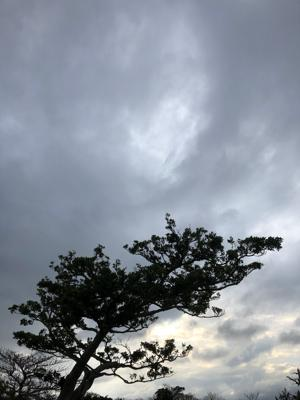
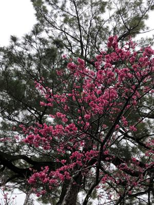

うるがいの話 ある日
最新: 白夜【うるがいの話 ある日】とは 一日だけのプログです
『うるがいの話』の最新一日だけのプログで、通信料が少なく経済的だ。カニの画像をクリックすると全ての日付が載る『うるがいの話』サイトを表示します
|
|
【うるがいの話】 うるがい(ｳﾙｶﾞｲ urugai)とは、『もずくがに』の名前でとても大きくなります。 |
|---|---|
|
|
【カミマヤーの話】 猫のことを方言でマヤーといいます。カミマヤー（kamimayaa）とは、神の猫のことです。 |
|
【タナガーの話】 たながー（ﾀﾅｶﾞｰtanagaa）とは手長えびのことで、何種類かあり大きいのは車 エビぐらいになります。 |

|
【ぶながぁの話】 ぶながー(bunagaa)とは、赤い髪の毛、赤い身体、そして身長は１ｍ２０ｃｍ ぐらい、川の蟹を食べているの目撃された。場所は沖縄県国頭郡大宜味村のと ある村僕の隣近所に住んでいる爺さんから、聞いた話です。 |
|
|
【ギーマの話】 ギーマ(giima)とは、山原の里山に咲くスズランに似た、 花を付けます。実は食べられます、 気が付くと口の周りが紫になっています。 |
2022年01月29日 (土）白夜
16:19

録画を見る。あの踊りは、オリンピックの体操床よりスゴイと思った、久々に
面白かった。 『ホワイト・ナイツ（白夜）』 、ソ連の時代の映画を見るとは
まだ、読書中の本「煉獄のなかで」とシンクロしている。
ロシアはウクライナを攻撃するのだろうか。オリンピックのメールが飛んで来
る、東京オリンピックのメーリングリストを引き継いでいるようだ。今日は一
日中、雨が降る。ジョギングができない、マ、たまにはいいか。今、ハマって
いるのは新たに見つけた『ＭｕｓｅＳｃｏｒｅ』という楽譜ソフト、工工四の
楽譜は無理だが、ドレミファ（音名）に相当する弦を抑える勘所（合、乙、老
、下老）を譜面に表示すべく、日夜開発に励んでいる。・・暇な今しかできな
い、進捗は８割程度だろうか。

１６時１０分 ビットコインの総資産 ￥１２、５９７↑